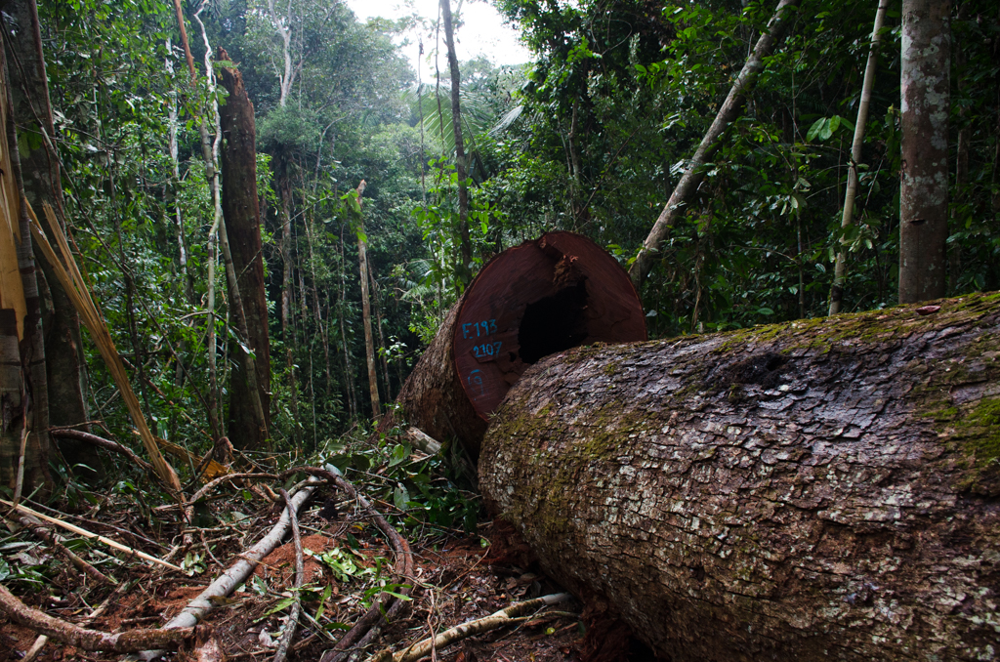

Política Nacional Forestal y de Fauna Silvestre

GALERÍAS
SERFOR - Video sobre inventarios forestales
El Módulo de Inventarios del Sistema Nacional de Información Forestal y de Fauna Silvestre (SNIFFS) permite gestionar la información de inventarios forestales, evaluaciones poblacionales y el valor de los ecosistemas.
Actividades del INFFS
Es el conjunto de actividades prioritarias que permite recoger la información de campo para identificar los recursos y generar insumos aplicados en la formulación de políticas forestales y de fauna silvestre.